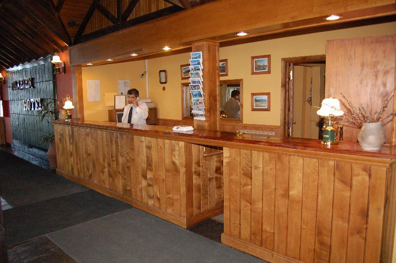

Nuestra Historia
Hoy hace 7 años después, Altos de Montaña sigue siendo eso: Un lugar chiquito, familiar, donde el mate se toma mirando la montaña y donde la gente viene a desconectar de verdad.

Somos un complejo de cabañas ubicado en Carlos Paz, Córdoba. Ofrecemos un espacio ideal para descansar, disfrutar de la naturaleza y compartir en familia o con amigos.
Hoy hace 7 años después, Altos de Montaña sigue siendo eso: Un lugar chiquito, familiar, donde el mate se toma mirando la montaña y donde la gente viene a desconectar de verdad.